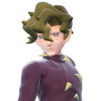
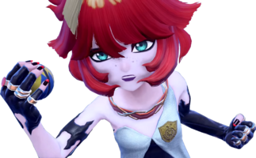

Pokemon Scarlet and Violet are the newest releases from the Pokemon Company, being released on November 18th, 2022.
It is the first game in Pokemon's newest Generation IX, and was released after games that had accumulated a lot of praise, like New Pokemon Snap and Legends: Arceus. All of this put a lot of pressure on Scarlet and Violet to succeed, and while it did have some shortcomings, I can safely say it still was a success. With an amazing 3-segment story, great characters, and awesome music, I'd say that this is one of the best games in the Pokemon franchise.
Lets talk about it some more, shall we?
The game begins with you, the protagonist(either Florian or Juliana), getting up from your desk and heading downstairs. Your mother informs you that you can't leave yet, as you have to wait for something before heading off to school. Soon after, Director Clavell arrives at your house to give your mother the last forms she needs for school, as well as inviting you outside to give you your first starter Pokemon. Clavell then leaves to head over to the house down the path, and you follow him with the three starters, Sprigatito, Fuecoco, and Quaxly. As soon as you arrive at the house, the starters all leave to do their own thing outside, with Quaxly taking a bath in one of the fountains, Sprigatito starting a small Petal Blizzard in the flower garden, and Fuecoco burning an orange by mistake. A girl then asks if the starters are yours, and Clavell replies that you haven't made your choice yet. The girl introduces herself as Nemona, your first rival, and one of the Champions of the region, and you are free to choose your starter. No matter which starter you choose, Nemona will always choose the weaker one, stating she wants to start over with a new team to follow you on your journey, and Clavell takes the remaining one. You and Nemona then have your first battle, and she tells you to head over to the lighthouse after a quick catching tutorial.
Along the way to the lighthouse, Nemona catches up to you to check how many Pokemon you've caught, only for her to get interrupted by a mysterious cry. You look around and find a mysterious Pokemon lying on the beach, and you fall off the cliff, only managing to be saved because of your Rotom Phone. You give your mom's sandwich to the Pokemon, and it immediately goes into battle mode and starts leading you through Inlet Grotto to return to the surface. Nemona spots you from her vantage point, and asks if you're okay, trusting the Pokemon to lead you through the grotto. When you're almost through, however, Nemona yells at you to watch out, and you and the Pokemon get surrounded by a bunch of Houndour, as well as a Houndoom. The Pokemon rescues you from the Houndoom, and carries you up to Nemona, before reverting into its normal state. Nemona asks you about what kind of Pokemon it is, saying that it kind of looks like a Cyclizar. When you reach the lighthouse, a young man spots you from the door to a small building connected to it, and starts yelling at the Pokemon, as well as you and Nemona, and challenges you to a battle. After losing, he gives you the Pokemon, either Koraidon or Miraidon depending on your version, and leaves. After this, you head to Mesagoza, where the academy is.
Before you enter Mesagoza, Nemona stops you for a battle, and shows off the new battle gimmick, Terastallizing, which allows the Pokemon to change its type. After winning, Nemona says that she'll try to get you a Tera Orb, the device used to Terastallize Pokemon. You then enter the city, and while you're free to explore it, you eventually have to head over to the school, which is either Naranja or Uva Academy, depending on your version. Outside the school, you encounter your third rival, being Penny, who is getting harassed by two students who are asking her to join Team Star. You approach them, and they ask if you want to fight. After you defeat the first grunt, Nemona runs out, asks why are you getting into a fight with random people, before handing you a Tera Orb and telling you to try Terastallizing against the second grunt. After winning, Penny walks away, and you and Nemona follow her up the staircase to get into the school.
After you get in, you head to your first class, where you introduce yourself to everyone. After this, you are free to explore a bit more of the academy. If you head to the staff room, Nemona will introduce you to the Champion, Geeta, and tells you that you should try to become a Champion like herself. Regardless of your response, she registers the locations of the gyms in your map, which allows you to take the Victory Road route. If you go to the cafeteria, you'll meet Arven again, who asks you to help him with his own personal quest of finding these rare herbs known as "Herba Mystica", which are allegedly magical herbs that can improve your health. He says that he needs help as the Herba Mysticas are guarded by giant Pokemon known as "Titan Pokemon", and he doesn't have anyone who can help him get past them. He registers the locations of the Titan Pokemon in your phone, which allows you to take the Path of Legends route. When you try to leave the cafeteria, a mysterious person calls you, introducing themself as Cassiopeia, claiming they hacked your phone to call you. They ask if you can help them with a little mission of theirs, which is to go around to all of the bases of Team Star and take them down, because Team Star has become a huge problem for the students and the school. They then hang up, and Director Clavell walks in, telling you that you should probably be quieter when answering calls, before letting you leave the cafeteria.
After these three events, you head over to the Director's office, and get a call from Professor Sada or Turo, who asks you to take care of Koraidon/Miraidon, which you agree to. After this, you return to your dorm room, and a cutscene plays where Director Clavell announces the beginning of the Treasure Hunt.
After you leave the academy to start your treasure hunt, Nemona and Arven start arguing over which path you should take, before you get another call from Cassiopeia, who cuts in and says that you should probably help them take down Team Star, but its your choice. They also register the locations of all of the Team Star bases in your phone, which allows you to take the *Starfall Street* route. Afterwards, Koraidon/Miraidon comes out of their Poke Ball, and you can ride on them as a method of transport. After this, you are free to go in whichever direction you want. There is no set order in which path you have to take, however there is a recommended order. Regardless of your choice, you can complete the game at your own pace, doing whichever path you feel like at whatever time.
Recommended order to play the game in(note that you can do everything in whatever order you want, this route is only recommended due to lack of level scaling)
| Katy of Cortondo | Bug-type Trainer | Level 14(first battle), Level 65(rematch) |
|---|---|---|
|  Brassius of Artazon | Grass-type Trainer | Level 16(first battle), Level 65(rematch) |
| Giacomo of the Segin Squad | Dark-type Trainer | Level 21(first battle), Level 65(rematches) |
| Iono of Levincia | Electric-type Trainer | Level 23(first battle), Level 65(rematch) |
|  Mela of the Schedar Squad | Fire-type Trainer | Level 27(first battle), Level 65(rematches) |
| Kofu of Cascarrafa | Water-type Trainer | Level 29(first battle), Level 65(rematch) |
| Atticus of the Navi Squad | Poison-type Trainer | Level 32(first battle), Level 65(rematches) |
| Larry of Medali(Member of the Elite Four) | Normal-type and Flying-type Trainer | Level 35(first battle), Level 59(Elite Four), Level 65(rematch) |
| Ryme of Montenevera | Ghost-type Trainer | Level 41(first battle), Level 65(rematch) |
| Tulip of Alfornada | Psychic-type Trainer | Level 44(first battle), Level 65(rematch) |
| Grusha of Glaseado Mountain | Ice-type Trainer | Level 48(first battle), Level 65(rematch) |
| Ortega of the Ruchbah Squad | Fairy-type Trainer | Level 50(first battle), Level 65(rematches) |
| Eri of the Caph Squad | Fighting-type Trainer | Level 65(rematches) |
| Rika of the Elite Four | Ground-type Trainer | Level 57 |
| Poppy of the Elite Four | Steel-type Trainer | Level 58 |
| Hassel of the Elite Four | Dragon-type Trainer | Level 60(Elite Four), Level 67(Academy Ace Tournament) |
Note that while Geeta is part of the League and it is necessary to beat her to finish Victory Road, she is not a type specialist, so she is not on the list.
The first path is Victory Road. This path is very similar to the gym quests in every Pokemon game, so I won't go over it in too much detail.
To take this path, you need to leave Mesagoza through the west gate. Nemona will call you once you approach it, saying that you should probably head over to Cortondo to take on Katy, as she's the closest to Mesagoza. Once you arrive, you can take on the gym test, which varies in every gym. Sometimes, when you arrive at the gyms, an Elite Four member will be there and introduce themselves. After the 5th gym, and before the 3rd and 7th gyms, Nemona will have a battle with you, as well as praise you for taking on the gyms. When you beat all of the gyms, you'll be able to head to the Pokemon League to take on the Champion Assessment.
The first part of the Assessment is the interview. Rika will ask you a series of questions, and you have to answer them right, otherwise you have to restart. The only exception to this is the question where she asks you which Gym Leader was the hardest to take on, however that question impacts the answer to the next two questions. You are able to take the interview before getting 8 badges, however Rika asks you different questions and still turns you away. After passing the interview, you are able to take the next part of the Champion Assessment: The Elite Test. During this segment, you have to take on all 4 members of the Elite Four in order. After beating them, you'll take on the final part: the Champion Battle, where you have to fight Geeta. While she is not as hard to beat as certain other Champions(such as Brilliant Diamond Shining Pearl's Cynthia), her team is still quite a high level, with her ace Pokemon being level 62. After beating her, Geeta will take you outside, and Nemona will rush over, saying that she heard about your win, and is desperate for a true battle of equals. She asks you to meet her in Mesagoza, where you have your final battle of Victory Road: a full-out battle between you and Nemona at her full strength. After this battle, Victory Road's story is completed.

The second path is Path of Legends. This path has the set-up for the finale, and has a rather sad story. To start this route, you need to exit Mesagoza through the east gate. Arven calls you to make sure you're all good, and tells you to start looking for the Stony Cliff Titan, while also telling you to be careful. Whenever you get close enough to a Titan's location, Arven will call you and inform you that you are approaching it. Once you encounter the Titan, you will instantly begin battle with it. Once you lower its health enough, it'll flee from the battle and run off to another location. When you catch up with it, it will smash a wall and eat the Herba Mystica, and Arven will run over and join the fight with you.
After it eats the Herba Mystica, the Titan Pokemon will get a small boost and attack you again. Beating it a second time begins a long cutscene where you and Arven run into the cave the Titan smashed open to look for the Herba Mystica. Arven then tells you a bit about each Herba Mystica, and makes a sandwich for you with it. After he makes them, he gives you a Titan Badge for beating the Titan Pokemon, and you get the sandwich. Koraidon/Miraidon comes out at this point, and it wants your sandwich. You give it the sandwich, which it eats, and it gives it a new powerup for it to help you around Paldea, either being:
(unknown credit to second image)
If this is the first Titan, Arven will simply complain about Koraidon or Miraidon, as well as the fact that you gave it your sandwich, before giving you some of his. After you eat it, you go to help him clear off the picnic table, but he tells you that you can leave since you've already helped him enough. After you leave, he sends out a suspicious Pokemon that you don't get to see. However, if this is your second Titan defeated, Koraidon/Miraidon approaches a sandwich on the picnic table, and Arven lashes out at it, telling it to leave it alone because it isn't its sandwich. He then apologizes and sends out the suspicious Pokemon from the first Titan, his partner, Mabosstiff. He gives it a bit of his sandwich, and explains that Mabosstiff was severely injured by a mysterious Pokemon, and that nobody could help him, and that he was using the Herba Mystica as a last-ditch attempt to make him feel better. When he checks out Mabosstiff after it finishes the sandwich, he notices that it opened its eyes and he starts crying with joy, saying it had been a long time since it had opened its eyes. After each Titan, Mabosstiff gets a little better, being able to bark after the third Titan, an unknown effect after the fourth Titan, to finally being fully recovered and being able to stand up after the fifth.
After each Titan battle and cutscene, Professor Sada or Turo, depending on your version, will call you, telling you to keep taking care of Koraidon/Miraidon, and hangs up. Before the Quaking Earth Titan battle, however, Sada/Turo calls you and tells you to be careful, as the Quaking Earth Titan escaped from somewhere called "Area Zero", which is located in the Great Crater of Paldea, a location that is restricted due to safety hazards. After the fifth Titan, Sada/Turo goes on their normal speech about Koraidon/Miraidon regaining more of their power, however Arven interrupts them before they can hang up. They recognize Arven's voice, and ask him to bring you to the Poco Path Lighthouse where you first met, as they have something to tell you there, and hang up. Arven is upset over this, saying that that was the first time he had heard his parent's voice in years, and it was only to tell him to be an errand boy. Despite being upset, he agrees to take you to the Lighthouse.
When you arrive at the Lighthouse, he opens the door for you and you step inside. A monitor flickers on in the back of the lab, and Sada/Turo appears on it, saying that they need your help, as they are currently trapped in Area Zero. They ask Arven to bring either the Scarlet/Violet Book down with him, and he shows the book to them. They hang up, and Arven says that Area Zero was where Mabosstiff got injured in the first place. He asks if you're going to go down there, and when you say you will, he reluctantly agrees to go with you, saying that he can't let you go on your own, and that he'd like to give his parent a piece of his mind. He asks you to go outside so that he can have a battle with you to see if you both are ready to go into Area Zero. After winning against his team plus his Mabosstiff, he says that you and him might need some help if they're going to get through Area Zero. You can then offer to take Nemona or Penny alongside you, and he agrees and says that he'll meet you at the Zero Gate near Medali. This ends the Path of Legends storyline, but we'll be meeting up with Arven and Mabosstiff really soon. For now, lets turn our attention to Penny.
*Starfall Street* is the third and final route you can take before the endgame. While not as important as Path of Legends and Victory Road, *Starfall Street* is important lore-wise when it comes to the school you go to, Naranja or Uva Academy. There is no set way to take this path, so just head to the closest Base(either the Segin Squad[Dark] or the Schedar Squad[Fire], as those are the closest ones to either route). Once you approach either base, Cassiopeia will call you once again, informing you that you are close to one of the bases, and welcomes you to Operation Starfall. As soon as they say this, a voice calls out from behind asking if there's room for one more. Both you and Cassiopeia are surprised, and you turn around to see a rather suspicious looking person, who claims to be a student named Clive, saying that you and him are friends. When Cassiopeia asks why he's joining, insisting that this isn't for fun, he replies that he wants to find out why members of Team Star aren't going to school. When he asks Cassiopeia why they're after Team Star, they reply vaguely, saying that they have a history with Team Star. Clive doesn't press more, and Cassiopeia goes into detail about Operation Starfall. Their plan is to get you, a trainer that has some serious potential, to take down each of Team Star's bases by first raiding them, and then beating the bosses and taking their Star Badges. According to Cassiopeia, Team Star's code states that if someone challenges a Squad Boss to a battle, they are forced to accept, and that if the bosses lose, they have to give up their badge and step down. Cassiopeia says that they have already sent in challenges under your name, saying that they're essentially like declarations of war. Afterwards, Cassiopeia hangs up, and you're free to approach the base.
Once you approach the gate, you'll be challenged by a guard. Typically these are normal Team Star grunts, however, at Navi's, Ruchbah's, and Caph's bases, you'll be challenged by a unique NPC(with the exception of Caph, as their guard is a Team Star grunt by the name of Carmen). After defeating these guards, they will typically run inside the base(or in Navi's and Ruchbah's case, they'll walk away, after which they are approached by Clive who wishes to talk with them). Once they are defeated, Cassiopeia will call you again, giving you a bit of insight on each of the bosses. For example, when talking after Caph's Carmen is defeated, they'll say that Eri will try to attack you head on, and is shocked when you say that she retreated, before telling you to go inside and attack the base.
Each of the Team Star bases are essentially the same, with the exception of Pokemon, layout, and their boss. As soon as you enter the base, someone will come on the loudspeaker and challenge you to defeat 30 of Team Star's Pokemon in 10 minutes, a feat which is easily achieveable. During this, you'll be able to send out the first three Pokemon in your party using the "Let's Go!" feature, and they'll attack and defeat the Pokemon. If your Pokemon are hurt during this phase, you'll be able to use either the vending machines scattered around the base to heal them, or run back to the entrance to get Clive to heal them for you. After 30 Pokemon are defeated, you start the second phase, a Pokemon battle against the Boss of the base. They stand on top of their Revavroom-powered cars and battle you, using the Revavroom itself as the final boss. After defeating them, you are treated to a short cutscene showing a bit of Team Star's backstory as they prepare for a special operation known as "Operation Star". After this cutscene, they'll give you a TM of one of their moves, and you'll be free to leave.
Once you leave the base, Cassiopeia calls you again, asking if you've taken the boss's Star Badge. After saying yes, they remark on how the squad will likely disband soon, before mentioning the boss's name. They'll apologize for sounding sad, before transferring LP to your phone and giving you the ability to craft new TMs. They also say that they'll send someone from the Supply Unit to give you an extra reward. Penny shows up, claiming she's from the Supply Unit, and says that she is helping Cassiopeia as part of her independent study. After the second base, Koraidon/Miraidon will come out, which scares Penny. After a short cutscene, she gives you the materials and leaves.
After the third boss is defeated, Cassiopeia mentions that the goal of Operation Starfall is to take down all five bosses, then to take down their leader, known as the big boss. After base five, Cassiopeia reveals the identity of the big boss, saying that it is them, and apologizes for lying about their identity for so long. They say that they formed Team Star, and they treasure the friendship they made with the bosses, but says that since Team Star is now doing more harm than good, they're using their code to take them down. They then ask you to meet them in the schoolyard after dark so that they can finish what they've started.
When you arrive at school, Clive is waiting outside the doors for you. He reveals himself to be Director Clavell, and claims that he is Cassiopeia, saying that he used a pre-recorded voice to communicate with you while also being present. He then challenges you to a very difficult battle, using a team of level 60 Pokemon, as well as the final evolution of the starter your starter is weak to. After managing to beat him, he apologizes for lying to you, as he is not really Cassiopeia. He says that he is pretty sure he knows their identity, but claims that their sorrows were not yours to deal with. Afterwards, Ms. Tyme, the math teacher, runs outside, yelling at Clavell for fighting a student. She then takes him back inside to write an apology to the students, as well as informing him that she would be contacting the chairwoman of the school's board of directors, which Clavell seems worried about.
Heading upstairs to the schoolyard, you'll meet a hooded figure who approaches you on a battle court. Lowering their hood, they reveal themselves as Penny, who says she is the real Cassiopeia. She explains that she came up with the idea for Operation Starfall after watching you beat the Team Star grunts outside of the Academy on the first day, and that she pretended to be part of the supply unit so she could keep an eye on you. Clive runs over and Penny asks him to record the battle that's about to happen, so that Team Star can all know what happened to their boss. She then challenges you to a battle using her "Veevee" team(a team of Eeveelutions). After defeating her, a final Operation Star cutscene plays, where Cassiopeia calls the 5 bosses of Team Star, saying that they were all in trouble because of how bad Operation Star failed. When they stood up to the bullies, instead of fighting, they all ran away and dropped out of school. Cassiopeia then says that they'll take responsibilty for everything as they started Team Star, saying that they were going to miss the bosses. As the bosses beg Cassiopeia to tell them what they're planning, the camera shifts to Penny, who says goodbye, and thanks them as she walks away.
After this cutscene, she thanks the player and Clive, saying that this was the end for her. When Clive asks why she didn't order Team Star to disband in the first place, she says that under the code, she had no right to boss everyone around, and saying that she had to force them to stop by means under Team Star's code. When asked what Team Star means to her, she says that they are her greatest treasure. Clive then drops the act of acting like a student, and starts addressing Penny in a very formal manner. When Penny asks him to stop, he also reveals his true identity as Director Clavell, which scares her, stating that his outfit was a bit much and not having words to talk about the wig. Clavell then says that there were some people who were here to see her, and all 5 of the bosses walk onto the schoolyard, with Penny greeting each of them. They say that they are glad to finally see her in person, and say hello.
After this reunion, Clavell interrupts them to say that they won't be punished for being part of Team Star, however, he says that he cannot ignore the other school rules they broke, such as the customization of their uniforms and their truancy. As punishment, he orders them to use the Star Bases as training centers, making it clear that this is a community service punishment. Penny and the rest of Team Star agree to these terms, and you leave the schoolyard, later getting called to the director's office.
In his office, Clavell thanks you for helping take down Team Star, and someone knocks on the door. Penny then walks into the room, saying that she believes she should be punished heavier than the rest of Team Star. When asked why, she says it was because all of the LP she gave you was stolen from the League's point management system. Clavell says that her punishment for that is out of his jurisdiction, and he asks you to leave his office while he deals with Penny. Afterwards, Penny calls you and asks you to meet her in the front of the school, because she wants to talk to you. When you arrive, she talks about how the League is letting her off easy for hacking them, saying that they want her to help them improve their security and offering to hire her after she leaves school. She thanks you and gives you the TM for Draco Meteor, before turning around and heading back into the school. This ends *Starfall Street*.
If you have finished all three storylines, you are free to go do the finale. If not, you will need to finish both Victory Road and Path of Legends before you are able to take on the final mission: The Way Home.
If you've made it here, you're now in the final stretch, and the story's almost over(at least, until we get some DLC).
Once all three paths have been completed, you have to meet Arven at the Zero Gate. Head to Medali and go up a path behind the city to reach a hole in the crater's wall(Medali is situated very closely to the Great Crater of Paldea). Going inside, Arven will greet you, and tell you that he has found some companions to join you on the journey to Area Zero. You turn around to head inside, and this starts The Way Home's storyline.
Once inside, you meet Nemona-who was excited at the prospect of fighting stronger Pokemon- and Penny-who isn't as excited, but came because she owes the player. Sada/Turo then calls the player, greets the quartet, and introduces themself, asking the group to head downstairs to reach the exit. Once you get down there, you are asked if you are ready to go. Saying yes will start a cutscene where Arven, Nemona, and Penny get on Koraidon/Miraidon's back. Arven grabs you at the last second as Koraidon/Miraidon takes off, pulling you with them. Arven seats you in front of him, and you dive down into the clouds to arrive at Area Zero, a strangely ethereal place. Koraidon/Miraidon will proceed to go back into their Pokeball, and will not be able to be used until after The Way Home is completed, forcing you to walk through Area Zero. Maps don't work in Area Zero, so you will not be able to keep track of where you are. If at any point for any reason you need to return to the main overworld, you will be able to call a Flying Taxi, however there is no need, as at this point you should have a probably have a big supply of Pokeballs and Potions(also, at each research station, there is a bed you can use to heal).
After landing, Sada/Turo will call you again, telling you that they are stuck in the Zero Lab. Fortunately, there is a way to get in: By going to each research station, you will be able to open one of the locks on the Zero Lab. Opening all four locks will grant you access to the Lab. Each research station is built on the way down, with the last station being close to the Lab. Agreeing to help, you all head down, with Arven, Nemona, and Penny providing some dialogue and insight onto their backstories, from talking about their friendship with you, to their home lives, to even talking about Sada and Turo. Before each station, you have to defeat a random Pokemon. The first one is Glimmora, who Nemona recognizes as Geeta's ace Pokemon. Then a Scream Tail/Iron Bundle, which you and Penny take down easily. Finally, after encountering a wild Great Tusk/Iron Treads, you make it down to the Lab. In each station, books are left on the surfaces, which give a little more insight on Professor Sada or Turo and their work. The last station is covered in Tera Crystals, and the interior looks absolutely wrecked, with large canisters on the ground. In this station, Sada/Turo will call you again, but their voice glitches out and they hang up. You leave the station and head down to the ground floor, where you find more buildings that have been completely engulfed in Tera Crystals. Before opening the gate to the Zero Lab, Sada/Turo warns you that if you open the Lab, dangerous Pokemon will come out. Opening the lab, you get surrounded by wild Paradox Pokemon, and a second Koraidon/Miraidon comes down and scares your Koraidon/Miraidon, before going inside the Lab. After defeating the Paradox Pokemon, Nemona and Penny run off to get the ones that ran away, and Arven hangs back to get rid of the remaining Paradox Pokemon while you go inside.
Once inside, you see Sada/Turo slumped over on a stool. They get up and approach you, apologizing for what happened in Station 4 with their voice. They reveal to you that they're an AI copy of the actual professor, and that the real professor had actually died during the event that destroyed Station 4. They then ask for your help, as they need to shut off the time machine and can't do it without the Scarlet/Violet Book. As you head down in the elevator, AI Sada or AI Turo explain a bit more about being an AI and the original professor's goals, saying that the original professor was obsessed with the past/future and wanted to bring the mysterious Pokemon described in the Book into modern times. The AI also says that they cannot let this happen, as the introduction of the Paradox Pokemon could mess up the current ecosystem of Paldea, which is why they need to shut off the time machine. They also warn that once you attempt to shut off the machine, some sort of backup system may activate where the AI professor is forced to fight you against their will. At this, the elevator opens and you step into the time machine room.
Once you put the Book in the time machine, an override system activates and the AI professor apologizes before the time machine activates. A Master Ball falls out of the machine and AI Sada/AI Turo catches it in their hand. They then initiate a difficult battle with you, using only Paradox Pokemon. After defeating them, the platform they are on lowers, and Arven, Penny, and Nemona run in. Arven looks at the AI, demanding that they tell him who they really are. The AI recognizes him, and attempts to talk to him and apologize for abandoning him, but they are stopped by a backup override system which covers the AI in Tera Crystal. The platform is raised once more, and the AI pulls out one more Master Ball. The text glitches out, and once it is back to normal, it reveals that the name of this final defense is the "Paradise Protection Protocol", which is the final battle you need to beat the game. The Protocol locks the Pokeballs of everyone whose ID doesn't match the Professor's, leaving everyone defenseless, and sends out their final Pokemon: The other Koraidon/Miraidon.
You attempt to send out the first Pokemon in your party, but its Pokeball is locked, and it seems you are out of hope... when you remember one final Pokemon you have: the first Koraidon/Miraidon. Sending it out, it looks at you and the others nervously, but by cheering it on, it transforms into its Battle Form for the first time since Inlet Grotto, and starts fighting the other Legendary Pokemon. During this battle, you can't do much damage to the opposing Pokemon, so your main goal is to chip away at the other Koraidon/Miraidon and keep yours healed up until Penny points out that your Tera Orb is glowing. Using your Tera Orb to Terastallize your Koraidon/Miraidon, then using the move Tera Blast on the other Koraidon/Miraidon will cause you to OHKO the opposing Legendary Pokemon, who flees after this battle. AI Sada/Turo realizes that the time machine will never be able to fully shut off while they are still here to reboot the system, so they take they bid a farewell to everyone, and reconcile with Arven over abandoning them as a child, before they take the Scarlet/Violet Book and go through the time machine to the past/future they always wanted to see. Arven is obviously upset over this, and Penny attempts to comfort him by saying that the professor is probably having a fun time in the past/future they went to. Arven thanks Penny, and the four of you, along with Koraidon/Miraidon, leave the Crater.
After leaving Area Zero, everyone is walking along the path in silence as they think over what just happened. Nemona, in an attempt to cheer everyone up, says this:
"Let’s take the long road home...and get a little more fun out of this adventure!"
You and Penny both agree with this plan, and you, Nemona, and Penny all run off the path while Arven waits behind with Koraidon/Miraidon, who pushes Arven towards the player and the girls. Arven pats you on the shoulder before walking off, with you, Nemona, Penny, and Koraidon/Miraidon walking alongside him. The cutscene ends with everyone walking off the path to finally end the adventure. This ends The Way Home and the main story.
During the Post-game, you are able to interact with Arven, Penny, and Nemona around the school, allowing you some insight into their goals and personalities and finally ending with you being able to access their rooms. If you haven't completed all of your classes, you'll have all the time in the world to take them, and these classes can help you with aspects of the game, such as teaching you about the rates of things or how Raids work. Speaking of Raids, you'll be able to unlock special 6-Star and 7-Star raids, however, only after you finish the main part of the post-game: The Academy Ace Tournament(or the School Battle Brawl, as Arven calls it).
Because you are now a Champion, Nemona wants to set up a battling tournament for the whole school to see who is the strongest. Geeta finds this to be a good idea, and offers to help organize it. Nemona then asks her to join in the competition, but Geeta says that she can't as she's too busy, since she has to do an inspection on all of the gym leaders. Geeta says that she wouldn't mind if you did the inspection instead so that she could free up time, and you accept. After this conversation, you'll be allowed to go all over the Paldea region to rematch all of the Gym Leaders. After doing so, Geeta asks to meet you in your dorm room. She asks you several questions about the Gym Leaders, and thanks you for helping free up her schedule.
The next day, Nemona pays a visit to your dorm room and tells you that everything's ready for the Academy Ace Tournament, however she laments the fact that she won't be able to do any battling as she's busy with all the administrative stuff. She does get excited over the fact that you'll be able to fight Geeta, and tells you to meet her in the entrance hall. Down there, she introduces you to an NPC who explains the rules of the Tournament. Afterwards, you are free to start the first tournament. In the first tournament, you'll fight Arven, Jacq, Dendra, and Geeta in that order. After winning, Nemona congratulates you, gives you a hat, and tells you that she'll be in the next tournament. After the first tournament is finished, you'll be able to fight the remaining teachers, including Miriam, as well as Clavell and Nemona.
Once the first tournament is finished, and you have completed a certain number of 5-Star raids, Jacq will call you on your phone, and tell you about these strange black Tera Raid crystals that have been appearing, explaining that they are very dangerous, and warning you not to attempt them. These black crystal Raids are incredibly difficult, with almost perfect stats and high levels(90 in-battle, 75 once caught). 6-Star raids can be of any typing, but 7-Star raids are reserved for event Raids(such as Charizard, Cinderace, and Greninja), and will not appear outside of their event dates. If you win a 6-Star or 7-Star raid, Jacq calls you once again asking if you just attempted a black crystal Raid. After saying yes, he just asks you to keep it a secret from Director Clavell, and hangs up.
The only other thing to do after completing the main story is to finish the Pokedex. While there are barely any trade evolutions(a girl in Levincia trades you a Haunter which immediately evolves into a Gengar), friends are still needed, as a Union Circle with a person who has the opposite game allows you both to catch Pokemon that are not from your game. For example, if one person is playing Scarlet and the other is playing Violet, the Violet player will be able to get the Scarlet version exclusives, and vice-versa. Trading with friends also allows you to get other certain version exclusives, such as the Legendary Pokemon, as well as the items needed to evolve Charcadet into Armarouge and Ceruledge(the items needed to evolve them are version exclusive, with Armarouge's armor being exclusive to Scarlet and Ceruledge's being exclusive to Violet). Every time you complete a certain goal in the Pokedex, you'll get a reward. Once you complete the Pokedex, you'll be given a certificate and the Shiny Charm. If this is paired with a Level 3 Sparkling Sandwich(made in Custom Mode), this boosts the shiny odds to a high rate. For example, the base shiny rates are 1/4086, and defeating certain amounts of Pokemon in an Outbreak will lower the shiny odds in that outbreak(1/1365.67 with at least 60 Pokemon defeated without the shiny charm). The specific rates, as well as sandwich recipes, can be found here, however the sandwich recipes can change, so just keep that in mind.
To complete the Pokedex, you will also need to pull out all of the mysterious stakes(which were mentioned earlier during Path of Legends). Pulling out all of the stakes of a specific color allows you to unlock a specific shrine for one of four Legendary Pokemon- Wo-Chien(Dark/Grass), Chien-Pao(Dark/Ice), Ting-Lu(Dark/Ground), and Chi-Yu(Dark/Fire), all four of whom are part of the Treasures of Ruin Quartet. Taking History classes with Ms. Raifort will eventually allow you to fast travel to each of these shrines, as Raifort will later put all of the locations of the shrines in your map. You can find a guide for where all of the stakes are here.
I really liked all of the new Pokemon designs, however I do feel like some are rather too simple(such as Oinkologne and Flamigo). Despite this, I do think they are still quite interesting and have neat concepts. I also really enjoy the Terastallizing phenonemon. Changing a Pokemon's type is a very unique concept and can lead to very interesting strategies(such as getting a Pokemon with the Ability Levitate, and changing it into an Electric Type[which is what Iono does with her Mismagius]). 2 of my favorite things about this game overall were the characters and the story. I thought the characters were very complex and not simple, and I liked the personality each of them brought. The story was also very interesting and rather sad at some times. While I wouldn't say its an exact comparison to Generation 5 with Black/White and Black2/White2, I would say it is up there for having a good story.
This doesn't mean that the game is perfect, though. There are many bugs and glitches, with many of them being comedic(albeit distracting), whereas some are more harmful, such as causing you to fall into the floor(which is a glitch I've seen many times online). The game also sometimes crashes, and while this is not often, it can still be very harmful, especially if you haven't saved your game. The game also runs very poorly in Casseroya Lake. Entering a battle causes the game to run at low frames(which makes animation seem choppy), and with the addition of the Pokemon Veluza, this means that you may enter battle way too many times, which can waste a lot of time as the battles at Casseroya Lake are very laggy. I hope that the game gets a major patch soon to fix everything, however I don't have high hopes that we will get one, as there is a possibility that it may be ignored in favor of DLC.
The game was very fun, however, and as stated before, I loved a lot of the new Pokemon added. Three of my favorites, in no particular order, are:
Another thing I really loved about this game is the amazing music. The soundtrack is very unique, even the battle and Wild Area themes, and the Trainer battle themes are even better. In my opinion, the 10 best themes are:
My final review of Pokemon Scarlet and Violet is a 8/10. It is certainly a great game, but its major drawback of being very laggy and buggy keeps it from being a perfect 10. A 8/10 may seem too generous to some people, but in my opinion, I believe that the ups of the game outweigh a lot of the downs(especially since the only 'down' the game has is being buggy).
Phone: 998-765-4321
Email: sendanemail@email.com